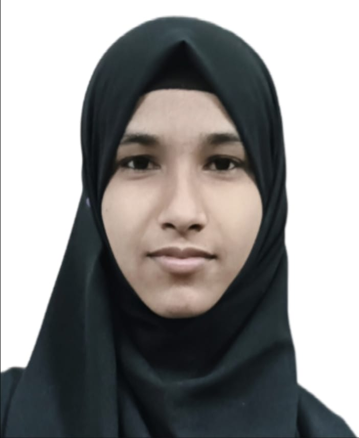

★ 10th: Government School, yadgiri(80.8%)
★ pu: college of science and commerce, yadgiri(89.8%)
★ BE: Shetty institute of Technology, Kalaburagi(8.33)[currently pursuing]
HTML
CSS
JavaScript
Java
Python